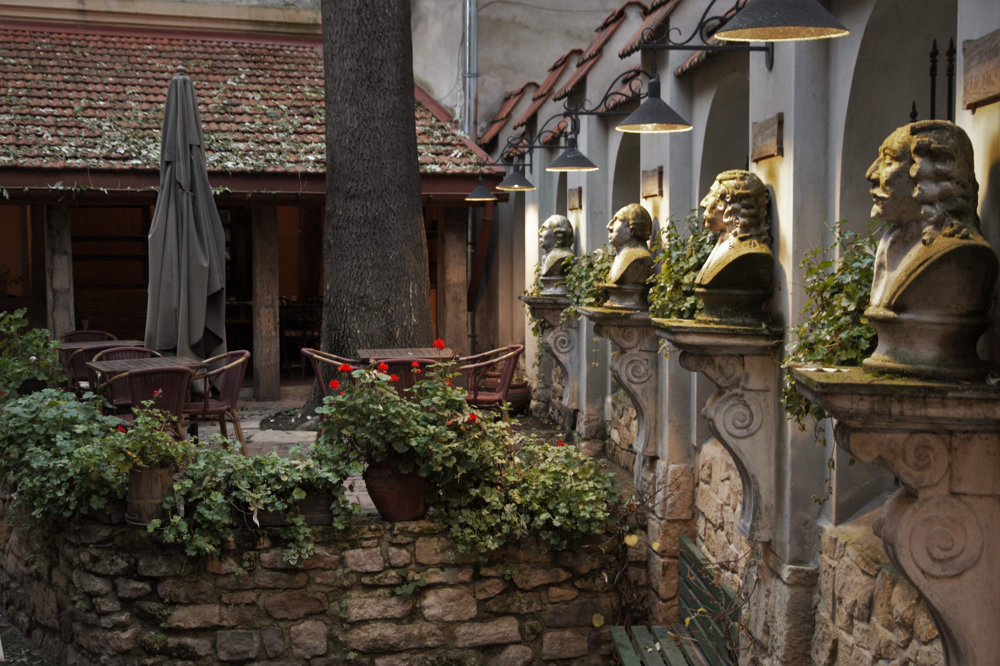
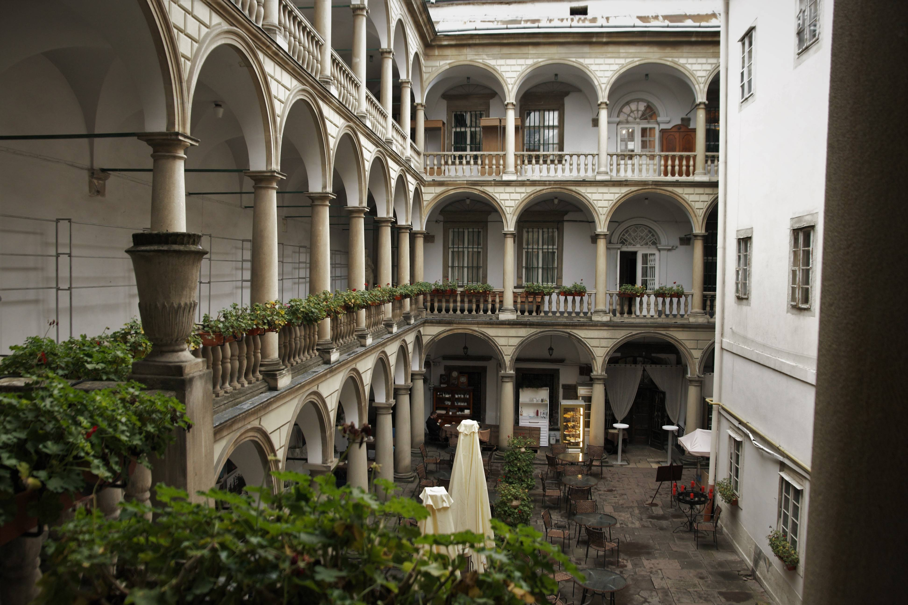
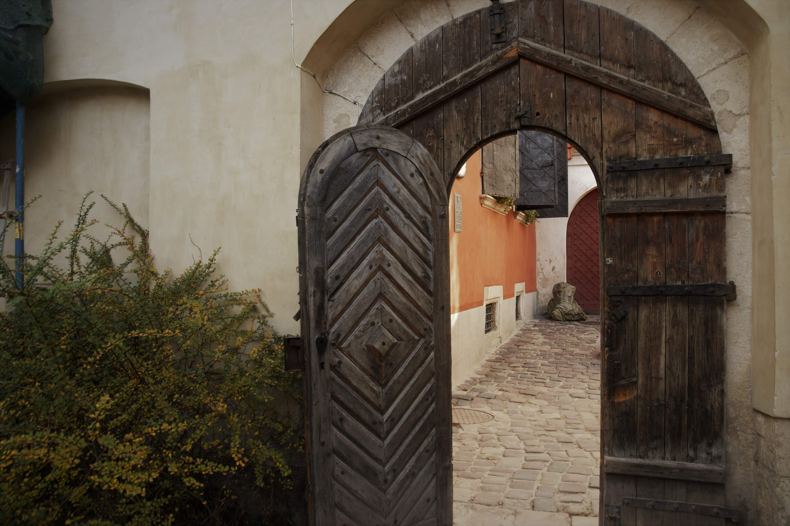
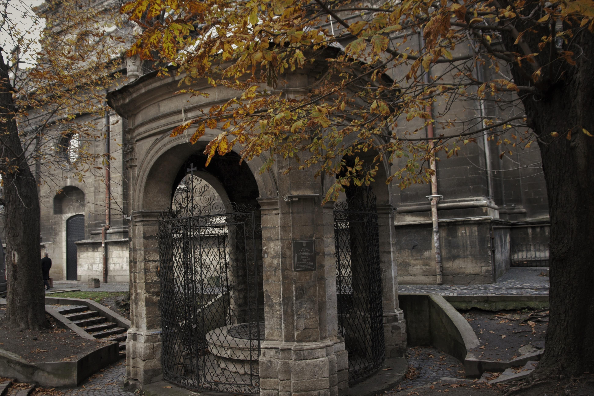

-

Гастротур
-

Екскурсії двориками міста
-

Вікенд для двох
-

Тематичні прогулянки
Місто Лева, Леополіс, Лемберг, Львів… Його вузенькі, сповнені подихом історії вулички, схожі на чудернацькі павутиння. Єдине місто України, що не зазнало значних спустошень та руйнувань на початку двадцятого століття і прославилося завдяки своєму суто європейському стилю.
Кавова столиця України, де на кожному кроці можна натрапити на памятку архітектури або визначне місце. Здається, що ми знаємо про Львів усе – куди піти та що подивитися, де випити кави чи настійки, де з’їсти штрудель, а де пляцки…
Знання більшості туристів закінчуються сами на цих пунктах, тож ми вирішили виправляти ситуацію, аби ще більше та глибше зрозуміти місто.
Шукайте нас тут
- Львів вул. Театральна 22
- +380675894286
- Carpe diem
- Пн-пт: 10:00-18:00
Напишіть нам
Дякуємо Вам!
Незабаром ми вам зателефонуємо.